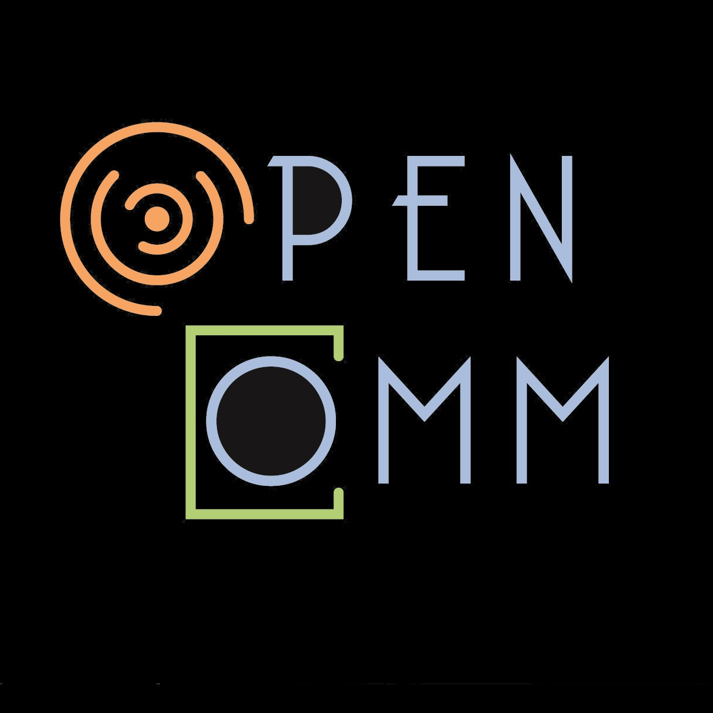
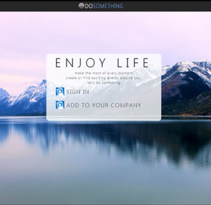
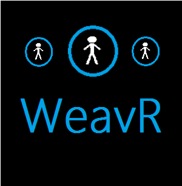
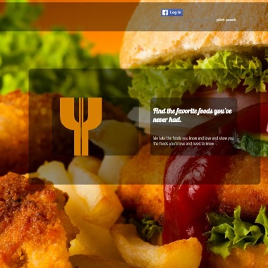
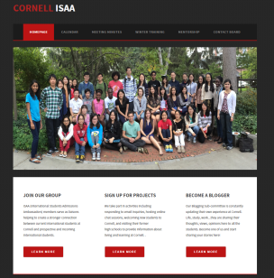

SPANDANA GOVINDGARI
Work
Github
LinkedIn
Email
My Work
Software Engineer @ Apple | Former Intern @ Microsoft | Rule breaker @ Life

Android Application
The most engaging audio conference you will ever experience on Android.
Social Tasking
Be more efficient by logging tasks online and sharing your tasks with your friends

ASP.NET Web App
Changes the way you organize and find events
A WPF App
Utilized leap motion API to improve gestures on the device

Windows Phone App
WeavR makes professional networking easy and fun

Yum Yuk
We recommend foods you will like and have never tried.

Websites
Websites for student organizations at Cornell
Ujiiv
The Social Calendar!
Campus Ambassador
Events organized as an intern campus ambassador for Microsoft